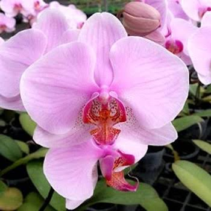
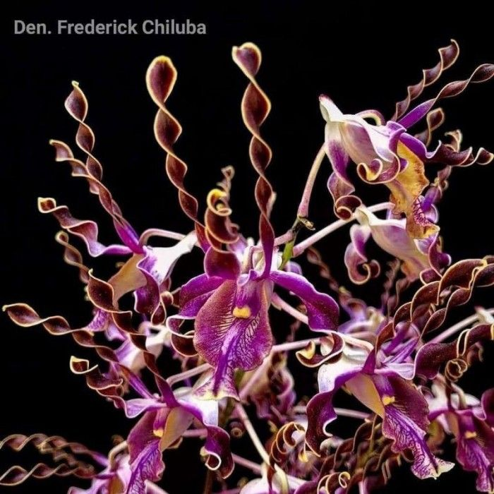

Dendrobium adalah salah satu marga anggrek epifit yang biasa digunakan sebagai tanaman hias ruang atau taman. Bunganya sangat bervariasi dan indah. Dendrobium relatif mudah dipelihara dan berbunga.
Pola pertumbuhan anggrek Dendrobium bertipe simpodial, artinya memiliki pertumbuhan ujung batang terbatas.[2] Batang ini tumbuh terus dan akan berhenti setelah mencapai batas maksimum. Pertumbuhan ini akan dilanjutkan oleh anakan baru yang tumbuh di sampingnya. Pada anggrek simpodial ini terdapat penghubung yang disebut rhizoma atau batang di bawah tanah.[2] Dari rhizoma ini akan keluar tunas anakan baru. Di antara rhizoma dan daun ada semacam umbi yang disebut pseudobulb (umbi palsu). Ukuran maupun bentuk pseudobulb bervariasi.
Anggrek Dendrobium membutuhkan sinar matahari dengan sedang sampai tinggi, sekitar 50-60% tergantung dari jenis Dendrobium. Intensitas cahaya yang sesuai dapat diperoleh dengan memberikan naungan berupa paranet sebesar 50%. Pada perawatan anggrek Dendrobium diperlukan kelembapan 50%, yang dapat diperoleh dengan menaruh nampan berisi batu bata dan air di bawah pot. Pembuatan ventilasi juga penting untuk memastikan adanya aliran udara yang dapat mencegah tanaman berjamur.[3] Pustaka Apabila suhu terlalu tinggi dapat dibantu dengan pengkabutan dengan penggunaan semprotan untuk menghindari penguapan yang lebih besar.

.jpg)
.jpg)
